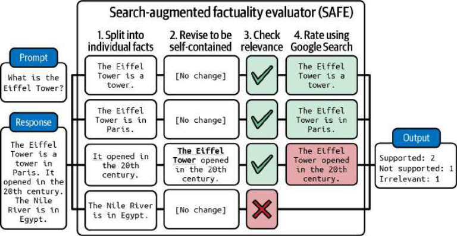

Qué hace buena a una aplicación
- Calidad específica del dominio
- Seguridad y riesgos
- Latencia, coste y experiencia
- Criterios en tensión
Lee de principio a fin; al terminar, el botón inferior te lleva directo a la siguiente lección.
Un modelo puede ser excelente y la aplicación seguir siendo mala. La evaluación de un sistema incluye la calidad de la salida, pero también el contexto, el riesgo y la experiencia.

Calidad específica del dominio
La calidad no es una sola cosa. En una tarea de extracción importa la exactitud de los campos; en un asistente importan la utilidad, la fidelidad y el tono; en código importan la corrección y la seguridad. La evaluación debe descomponer la calidad en criterios observables.
Define rúbricas y ejemplos para cada criterio. Si dos evaluadores no pueden aplicar la rúbrica de forma consistente, el criterio todavía es demasiado vago. La claridad de la evaluación mejora el producto, no solo la métrica.
Seguridad y riesgos
Un sistema puede generar contenido dañino, filtrar datos, obedecer instrucciones maliciosas o tomar acciones no deseadas. La seguridad se evalúa con casos adversariales y con controles: filtros de entrada y salida, permisos, confirmación humana y límites de acción.
No basta con que el modelo «se niegue» a algo. Hay que comprobar que el sistema completo se comporta bien cuando el modelo falla. La seguridad es una propiedad de la arquitectura, no solo del prompt.
Latencia, coste y experiencia
La latencia percibida depende del tiempo hasta el primer token, de la velocidad de generación y del número de pasos. El coste depende de tokens de entrada y salida, llamadas a herramientas, recuperación y reintentos. Un sistema puede ser correcto y demasiado caro o lento para el uso previsto.
Fija objetivos de servicio: por ejemplo, primera respuesta en menos de un segundo y coste máximo por operación. Evalúa esos objetivos junto con la calidad, porque optimizar uno suele afectar a los demás.
Criterios en tensión
Calidad, latencia, coste y seguridad tiran en direcciones distintas. Un modelo más grande puede responder mejor y tardar más; una barrera de seguridad reduce riesgos y añade pasos; un contexto más amplio mejora la respuesta y sube la factura. No existe un óptimo universal.
Define el orden de prioridades para tu producto y hazlo explícito. Un asistente médico y un generador de ideas no pueden usar la misma función de coste. Cuando dos criterios chocan, decide cuál es el mínimo aceptable y cuál puede degradarse. Esa decisión es diseño de producto, no un detalle de infraestructura.
Instrucciones, coste y latencia
Continúa la lectura sin volver al índice. También puedes usar la flecha → del teclado.